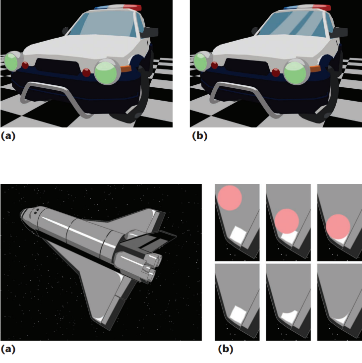

复现之前看到的风格化高光论文。
可模拟各种形状的风格化高光
在风格化渲染种，我们经常采用Blinn-Phong模型，用半角向量和法线的点乘来做风格化高光的效果，再进一步，用副切线来代替法线来计算各向异性高光。
之前看到的一篇论文stylized_highlight中描述了如何通过类似于布尔的操作将高光变为其他形状。很有趣，所以复现了一下。


原理
通过对半角向量的布尔操作来做到点乘的结果的差异性，最终实现特殊形状。
高光的形状，其实就是由不同点上高光的强弱（衰减）决定的。因为高光的强弱是由法线和半角向量的点乘决定的，半角向量越靠近法线，就越靠近高光计算的中心，因此可以把各个计算都移动到切线空间，半角向量和y轴（法线）的差异就是高光的强弱衰减。
通俗来讲，原理就是通过重定义半角向量的函数来得到不同的衰减函数，从而得到不同区域里不同的高光形状。
平移
1
2tangentHalfDir = tangentHalfDir + float3(_TranslationX, _TranslationY, 0);
tangentHalfDir = normalize(tangentHalfDir);方化
计算半程向量与切线空间 X 轴和 Y 轴的夹角(与法线和切线的夹角)，通过再重新映射这个弧度值来做到角度值比较小的时候，变化比较平缓，当角度值增大的时候达到一个突变，使得高光从圆形变成一个方形。类似于将高光变化的相关性从该点和中心点的距离变为该点和中心点为原点的坐标轴直线的距离。
1
2
3
4
5
6
7// Square
float sqrThetaX = acos(tangentHalfDir.x);
float sqrThetaY = acos(tangentHalfDir.y);
float sqrnormX = sin(pow(2 * sqrThetaX, _SquareN));
float sqrnormY = sin(pow(2 * sqrThetaY, _SquareN));
tangentHalfDir = tangentHalfDir - _SquareScale * (sqrnormX * tangentHalfDir.x * fixed3(1, 0, 0) + sqrnormY * tangentHalfDir.y * fixed3(0, 1, 0));
tangentHalfDir = normalize(tangentHalfDir);
旋转
类似于向量旋转矩阵，没啥好说的。
1
2
3
4
5
6
7
8
9
10
11
12
13float xRad = _RotationX * DegreeToRadian;
float3x3 xRotation = float3x3(1, 0, 0,
0, cos(xRad), sin(xRad),
0, -sin(xRad), cos(xRad));
float yRad = _RotationY * DegreeToRadian;
float3x3 yRotation = float3x3(cos(yRad), 0, -sin(yRad),
0, 1, 0,
sin(yRad), 0, cos(yRad));
float zRad = _RotationZ * DegreeToRadian;
float3x3 zRotation = float3x3(cos(zRad), sin(zRad), 0,
-sin(zRad), cos(zRad), 0,
0, 0, 1);
tangentHalfDir = mul(zRotation, mul(yRotation, mul(xRotation, tangentHalfDir)));缩放
相当于控制半角向量在x轴和y轴之上的分量，例如 _ScaleX 是正数时，就是将 tangentHalfDir 向 x 轴负方向拉动，从而在 x 轴上“压缩”高光。
1
2
3
4
5// Scale
tangentHalfDir = tangentHalfDir - _ScaleX * tangentHalfDir.x * fixed3(1, 0, 0);
tangentHalfDir = normalize(tangentHalfDir);
tangentHalfDir = tangentHalfDir - _ScaleY * tangentHalfDir.y * fixed3(0, 1, 0);
tangentHalfDir = normalize(tangentHalfDir);